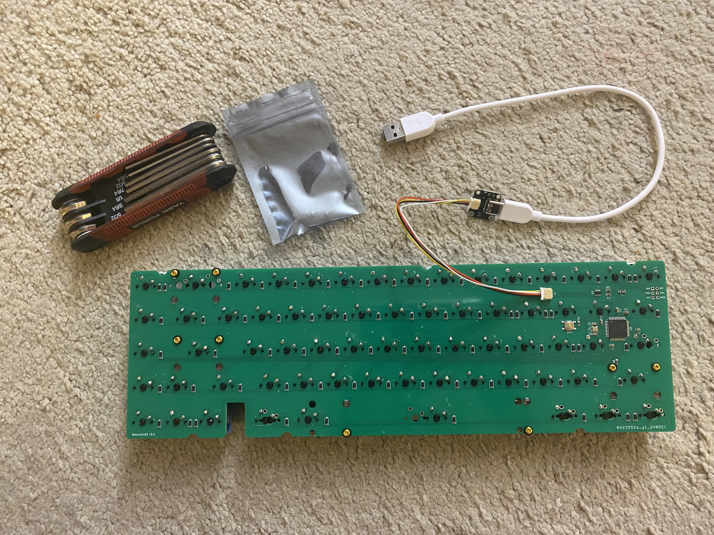
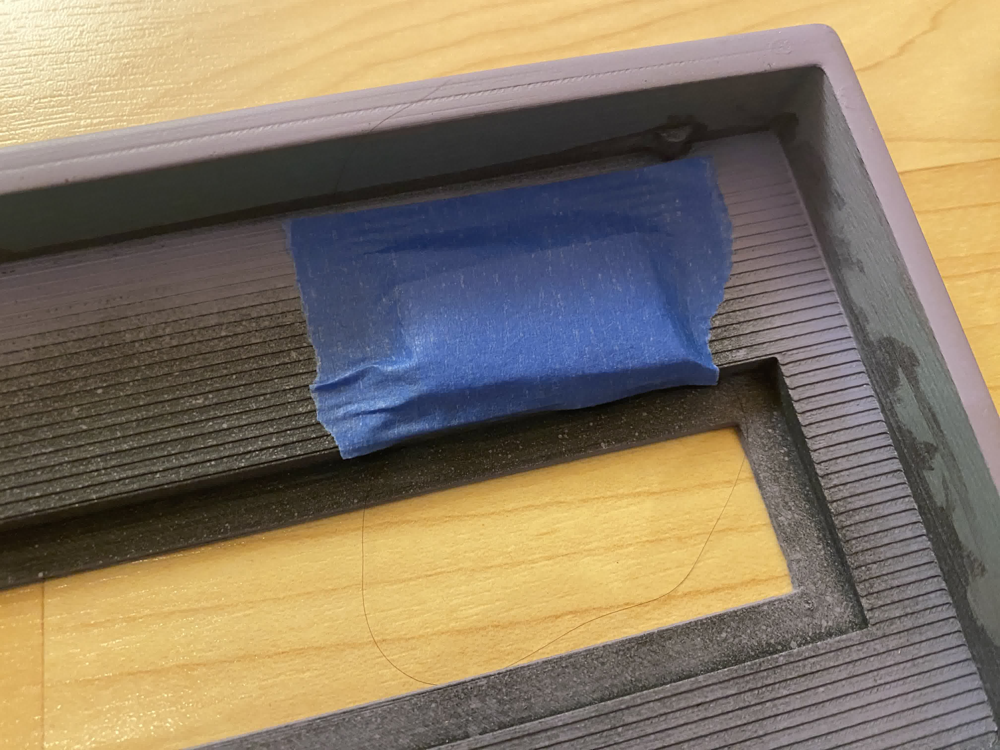

This is a 65% keyboard that I meant to be a very low budget keyboard. The
biggest reason why I called the other keyboard the "Budget Keyboard", and
not this one was because I believed that this one would not qualify to be
a daily driver. I was was sort of correct with this one, especially since
I felt like the acoustics and keycaps were very lacking. However, the
typing itself did feel pretty good in the end.
Since this was a project for the 3D printing club, the first part
manufactured was the case. This was printed at the makerspace at UCLA,
with somewhat dubious print quality. I believe that it came out a little
less polished than I expected because of the high nozzle diameter, I think
somewhere around 0.4mm. For the case design, I cut out a hole in the
middle to put a copper weight, only to realize how unfeasible that would
be, and ended up not doing anything with it. I think it was because of
this hole that the acoustics were off, especially if sound was traveling
through the keyboard into the desk rather than reverberating back towards
the top. Here is the case:
In this image above you will notice some additional parts, paint, and a
mat of polyurethane 0.25" foam. You can see the individual layers of the
print from the inside of the case, compared to the outside, which were
sanded for hours. I started from a higher grit just to get all of the
jagged edges smooth, before leveling everything out with high grit
sandpaper. Afterwards, we (the club) had primer and spray paint - I left
the inside semi-coated to show off the steps taken after everything was
done, layer by layer. The two additional black parts are for the USB, and
a spacer for an empty space on the keyboard. Do also look at the joints
for having a split case - they're not fantastic because of the print
quality, and can actually rattle quite a bit after putting the two split
parts together.

This is a soldered board that I used along with the daughterboard
necessary to be able to program and use the keyboard. I didn't buy the
board myself, so I didn't have the daughterboard and had to order one from
cannonkeys, which is the C5 JST variant. In order to program the keyboard,
I ended up doing some funky workarounds in order to now have to make a new
keyboard in QMK, and used QMK toolbox + QMK configurator instead. Since
the Bakeneko uses an ATMEGA32U4, I was able to use QMK configurator to
acquire my
.hex file
and program to the keyboard by launching it into bootloader by plugging it
in and pressince ESC at the same time, installing drivers through QMK
toolbox, and flashing it.
This is the board almost after everything was soldered and put in,
including Gateron oil kings, Glorious stabilizers, and a cheap Chinese
knockoff set of gradient blue keycaps. The gaterons were not modified at
all, but the stabilizers definitely were. In fact, these stabilizers had
phenomenally low quality such that I had to put put in a lot of band-aid
mods and lube in order to make them at least somewhat bearable. Because of
the spacing between the stabilizer bar and joint that it snaps into was
far too large, every time I hit the stabilizer it would rattle and feel
almost as if I was hitting a tactile switch rather than a linear. In order
to fix this, I put band-aids (yes, that's how much clearance it was
missing) in the little joint to fill it in. I then also lubed the sides
and band-aids, as well put in band-aids on the bottom of the stabilizers to
make them less harsh. Please never get these stabilizers. Here is an image
of them so you know to forever avoid them:
Before assembling all of it together, I lined each of the parts up for fit
just in case. Turns out, the print for the case came out so poorly that
one side was actually higher than the other. My guess is that the printer
wasn't leveled before printing, since it was significant enough to warrant
9 layers of tape on the right side in order prevent bending when typing on
that side of the keyboard. Here is the little patch I made last minute:

Lastly, here is the typing test. The video below is a test with no foam,
and the following one is with foam. Note that this build is relatively low
quality, partially due to the print, design, keycaps ($5), and combination
with oil kings (probably fine, but also probably an underlying reason why
I got them for free).
And here is the one with foam:
Overall, I think I prefer the one with foam despite the higher pitched
typing, simply because it creates more of a cushion when typing as well as
dampens the sound to a bearable volume compared to no foam.